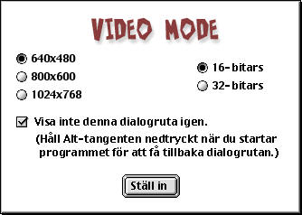

KOMMA I GÅNG
VIDEOINSTÄLLNING
Första gången du kör Cro-Magnon Rally, kommer du att få upp dialogrutan Video Mode:

Som standard har spelet de inställningar du ser ovan. Du måste vara mycket försiktig om du ändrar dessa inställningar, eftersom varje ändring av standard kommer att kräva mer VRAM. En Mac med bara 6 MB VRAM måste använda minimiinställningarna ovan, annars kommer VRAM inte att räcka till för alla texturer i spelet. Prestanda kommer också att påverkas. Ju högre upplösning du ställer in, desto långsammare kommer spelet att bli.